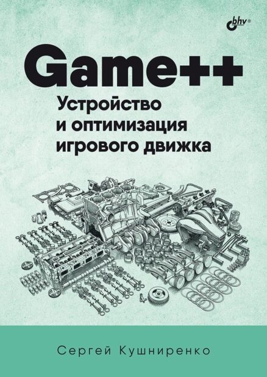
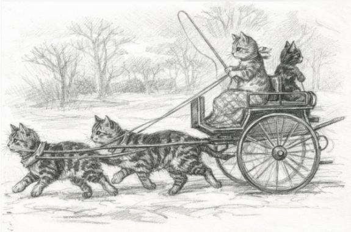
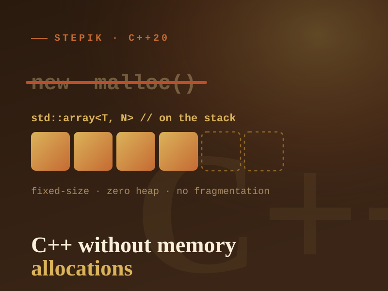

Game++. Building & Optimizing a Game Engine
How a modern game engine works under the hood: architecture, subsystems and real-world optimization. Published in Russian by BHV.
Notes on C++, game engine performance and reverse-engineering games from the nineties. Writing since 2014.
Complexity arrives together with a number: 16 ms, 5 GB of memory, a patch-size limit. How it gets bought, why two constraints are worse than one twice, and where the budget moves after a successful optimization.
↗ CraftVampire Survivors on Phaser, Balatro on Löve, and a monolithic GameManager versus EventBus and IAudioSystem: why the complexity budget is finite and should be spent where the player will see it.
↗ C++vector<vector<uint>> over a million locations: 72 bytes per 24 useful and 90 ms per snapshot. Count-then-allocate, a prefix sum in one buffer and CSR — a 17× faster build and a 23× faster snapshot.

How a modern game engine works under the hood: architecture, subsystems and real-world optimization. Published in Russian by BHV.

A free book — download it in PDF or EPUB. (In Russian.)
A work-in-progress book on pragmatic C++ that still makes sense a year later.
A work-in-progress book — access on request.

A modern open-source reimplementation of the classic city-builder Pharaoh (1999) by Impressions Games. Full savegame compatibility with the original, cross-platform, and clean, readable code.
About the gameA collection of dozens of animated loading indicators for Dear ImGui — spinners, progress bars and dots in a single header. Just include imspinner.h and call the spinner you need.

An intermediate course on writing C++ without dynamic heap allocations: which language and STL features are safe under tight resource constraints — in embedded and game development — without giving up modern C++ and OOP.